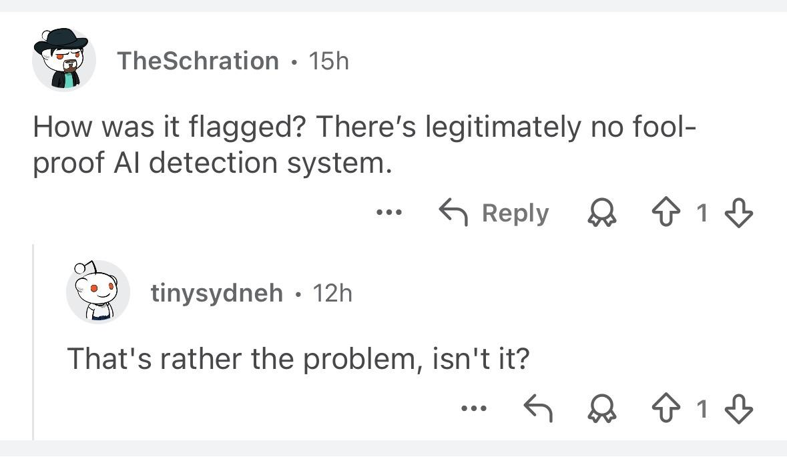

The Problem with AI Detection

One afternoon in summer composition, a LaGuardia student learns that a recent paper has come under suspicion of AI authorship. Their instructor claims the student's spoken and written English do not match and treats the paper as too composed, too clean. While denying any use of a large language model, the student acknowledges using Grammarly for editing and revision and offers to assemble proof through Google Docs version history, tracked changes in Word, and even a possible Draftback replay. The instructor accepts the paper but warns the student against Grammarly—and the thesaurus—leaving them to treat future writing as a ledger to preserve, explain, and defend rather than a practice of revision.
This dynamic typifies the labor AI detection has demanded across CUNY classrooms, even where no named detector is in the room. Plagiarism platforms like Turnitin have long shaped how students learn to write and under what conditions they see themselves as writers. More recently, the plot has thickened: these platforms now market AI detection services that claim to distinguish human-written text from machine-generated output. International students report accusations of dishonesty for syntax that is "too clean"; others misspell words or introduce deliberate errors to beat the algorithm, even when every word is their own. From wrongful accusations to self-policing practices, the harms of these tools are diverse and diffuse and often fall hardest on working-class and non-native English-speaking students like so many enrolled across the CUNY system.
When students feel the need to perform their humanity for an audience of algorithms, something has gone wrong. These students write for automated systems rather than for human peers — systems seldom understood by the professors who mandate them or the administrators who procure them.
To grasp the problem with AI detection, let's consider what a prominent service claims to do. GPTZero uses two metrics: one is perplexity, a measure of how well an LLM would predict each successive word in a passage; another is burstiness, used to score variation in the sentence-level rhythm and structure of student writing (Tian). Of course, this depends on the assumption that human writers intuitively exhibit syntactic diversity, and mix long and short sentences together by default, while AI models lean toward consistent, flat tempos at the sentence- and paragraph-level ("AI Detectors"; Galczynski).
This premise is incredibly shaky; it's also constitutive of detection failures at scale. One of the most comprehensive accounts in the field tested twelve publicly available tools alongside Turnitin and PlagiarismCheck, reporting they were "neither accurate nor reliable," and exhibited a systematic bias toward classifying AI-generated text as human-written (Weber-Wulff et al.). Even a "low" 1% false positive rate across 22.35 million first-year college essays amounts to 223,500 essays falsely flagged in a single year (Hirsch).
Those affected are hardly edge cases. The MLA-CCCC Joint Task Force on Writing and AI put it plainly when it warned AI detection tools enable "false accusations" that "may disproportionately affect marginalized groups." Sure enough Black students face disproportionately higher rates of AI-detection accusations than their white peers (Madden et al.). Students identifying as disabled are also reported more likely to receive a false positive for submitted writing that departs from the narrowed standards these tools inscribe as human (Hirsch). Lastly, one study of seven widely used detectors found these services flagged as AI-generated 61.22% of TOEFL essays by non-native English speakers, and, across all seven detectors, 89 of 91 essays were flagged by at least one of the tools sampled in the study (Liang et al.).
These failures are all the more consequential because these services rely on a construct of authenticity narrowed to features the algorithm can count, weight, and score — and that legibility is not evenly distributed, especially among student groups as diverse as those at CUNY.
The "human" criteria these systems reify are not inherent qualities of submitted writing but a dynamic classification scheme for evaluating prose, as if its standards were always already there. In return students are left to bear the burden of an automated specter casting doubt over different kinds of writing they might otherwise use to express themselves.
Part of the issue lies in the "problems" these tools presume of us and the solutions they claim to provide alongside them. At the same time, detection treats writing as a process under surveillance, invites suspicion in place of trust and audience, and recasts assessment as a form of automated verification rather than a responsive, context-aware teaching practice.
For all their alleged sophistication, AI detectors are still trying to sort language into patterns that do not hold consistently across LLMs and that are easily disrupted by simple obfuscation strategies (Weber-Wulff et al.). Their unreliability, and the anxiety they produce, is therefore hardly surprising. The larger problem is that they invite us to accept a hidden standard of human writing that is at once opaque and flattening, one that treats authentic prose as a fixed object or end product. As large language models get better and better at simulating human communication, the goal posts will continue to shift as the line between human- and machine-generated text narrows by the day.
Building trust in the classroom is hard work, and AI detectors undermine that effort at every turn, like a wolf in sheep's clothing, a problem dressed in its own solution. We and our students are better served when we take time to slow down, start small, and treat reading and writing as social projects still in the making. And for how fraught authorship is these days, it'd do us well to leave the problem of AI detection at the door.
Draft v6 · May 2026 · Final proof text